Bubble Sort
Content
Method
Ascending Order:
- Prepare a list of unsorted elements A[0...n-1], while n is the number of elements
- Start from A[i] where i = 0, compare A[i] to A[i+1]
- If A[i] is larger than A[i+1], swap the position of A[i] and A[i+1]
- Move to the next element A[i+1] and repeat step 3 until A[i] is smaller than A[i+1]
- Repeat step 2-4 where i = 1 to n-2
- If the list is still unsorted, repeat step 2-5 and start from i = 0 again. Stop it until the list is sorted
Descending Order:
- Prepare a list of unsorted elements A[0...n-1], while n is the number of elements
- Start from A[i] where i = 0, compare A[i] to A[i+1]
- If A[i] is smaller than A[i+1], swap the position of A[i] and A[i+1]
- Move to the next element A[i+1] and repeat step 3 until A[i] is larger than A[i+1]
- Repeat step 2-4 where i = 1 to n-2
- If the list is still unsorted, repeat step 2-5 and start from i = 0 again. Stop it until the list is sorted
Algorithm
Ascending Order:
for (int i = arr.length - 1; i > 0; i--) {
for (int j = 0; j < i; j++) {
if (arr[j] >= arr[j + 1]) {
int temp = arr[j];
arr[j] = arr[j + 1];
arr[j + 1] = temp;
}
}
}
Descending Order:
for (int i = arr.length - 1; i > 0; i--) {
for (int j = 0; j < i; j++) {
if (arr[j] <= arr[j + 1]) {
int temp = arr[j];
arr[j] = arr[j + 1];
arr[j + 1] = temp;
}
}
}
Early-termination & ascending order:
boolean swap = false;
for (int i = arr.length - 1; i > 0; i--) {
swap = false;
for (int j = 0; j < i; j++) {
if (arr[j] >= arr[j + 1]) {
swap = true;
int temp = arr[j];
arr[j] = arr[j + 1];
arr[j + 1] = temp;
}
}
if (!swap) {
break;
}
}
Early-termination & descending order:
boolean swap = false;
for (int i = arr.length - 1; i > 0; i--) {
swap = false;
for (int j = 0; j < i; j++) {
if (arr[j] <= arr[j + 1]) {
swap = true;
int temp = arr[j];
arr[j] = arr[j + 1];
arr[j + 1] = temp;
}
}
if (!swap) {
break;
}
}
Time complexity
| Best Case | Average Case | Worst Case |
| Ω(n) | Θ(n2) | Ο(n2) |
Example
For ascending order:
There are a list of unsorted elements A[0...4]
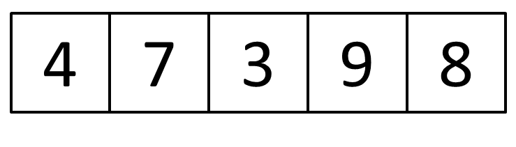
- Start from A[0], compare A[0] to A[1] 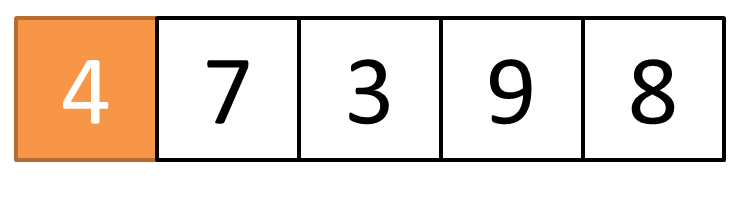 Because A[0] is smaller than A[1], so we do nothing in this case
- Compare A[1] to A[2] 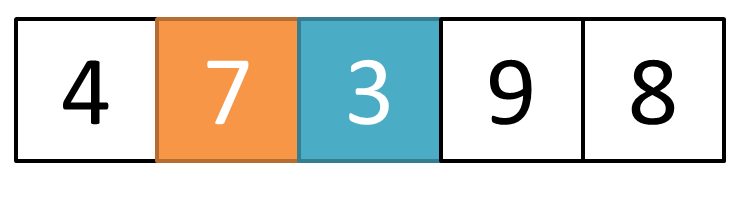 In this time, A[1] is larger than A[2]. So we swap the position of A[1] and A[2]
- After swaping, A[2] is smaller than A[3]. So we do nothing in this case 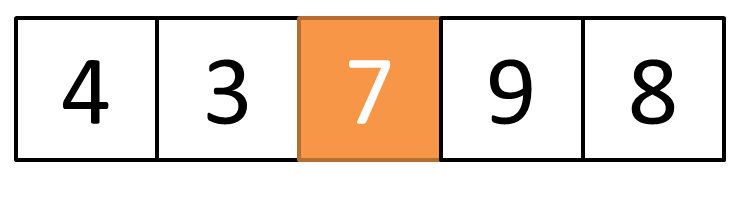
- Compare A[3] to A[4] 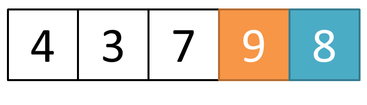 A[3] is larger than A[4]. So we swap the position of A[3] and A[4]
- The list is still unsorted. So we compare A[0] to A[1] again 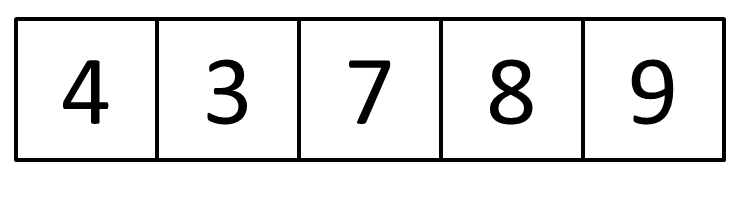
- A[0] is larger than A[1]. So we swap the position of A[0] and A[2] 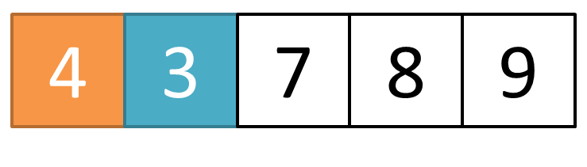
- After checking the whole list, this list has been sorted in ascending order 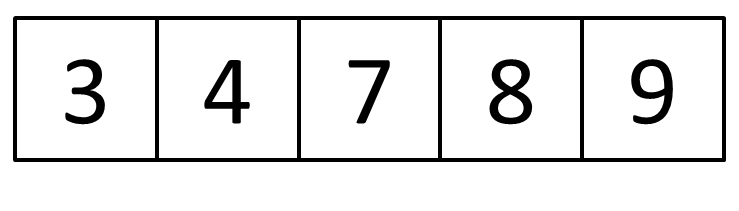
For descending order:
There are a list of unsorted elements A[0...4]
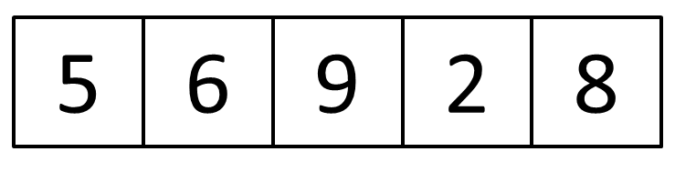
- Start from A[0], compare A[0] to A[1] 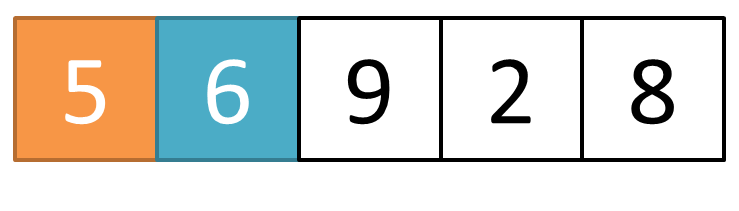 Because A[0] is smaller than A[1], so we swap the position of A[0] and A[1].
- After swaping, A[1] is still smaller than A[2]. 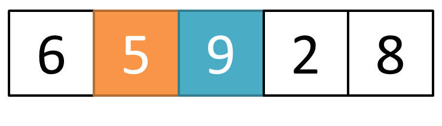 So we also swap the position of A[1] and A[2].
- Compare A[2] to A[3] 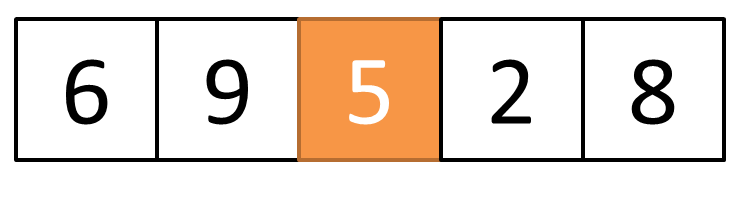 A[2] is larger than A[3]. So we still do nothing in this case
- Compare A[3] to A[4] 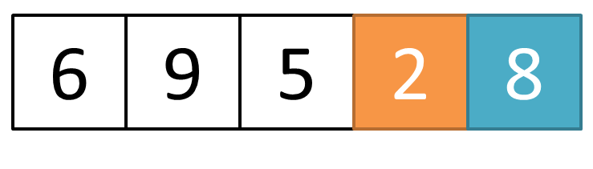 A[3] is smaller than A[4]. So we swap the position of A[3] and A[4]
- The list is still unsorted. 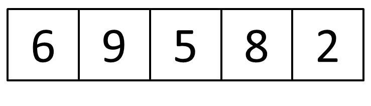
- So we compare A[0] to A[1] again 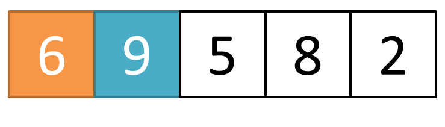 A[0] is smaller than A[1]. So we swap the position of A[0] and A[1]
- Compare A[1] to A[2] 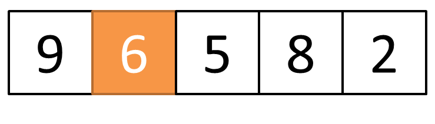 A[1] is larger than A[2]. So we do nothing in this case
- Compare A[2] to A[3] 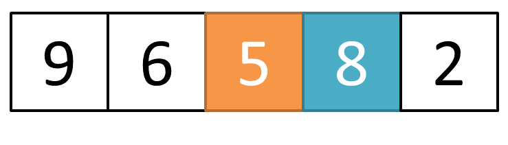 A[2] is smaller than A[3]. So we swap the position of A[2] and A[3]
- Compare A[3] to A[4] 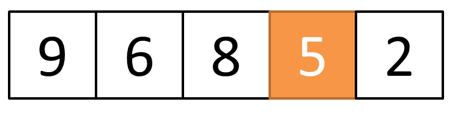 A[3] is larger than A[4]. So we do nothing in this case
- The list is still unsorted. 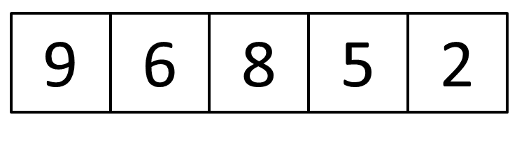
- So we compare A[0] to A[1] again 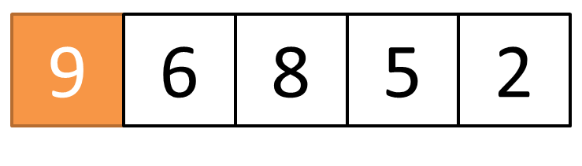 A[0] is larger than A[1]. So we do nothing in this case
- Compare A[1] to A[2] 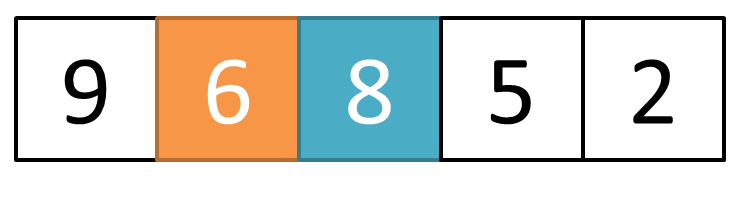 A[1] is smaller than A[2]. So we swap the position of A[1] and A[2]
- After checking the whole list, this list has been sorted in descending order 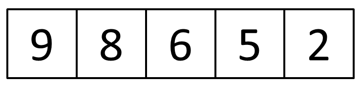